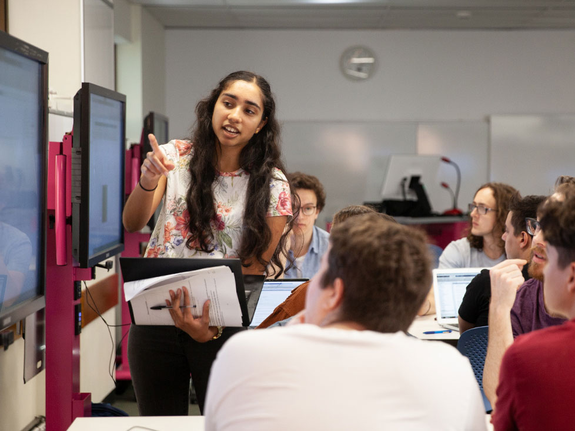
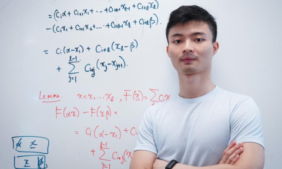
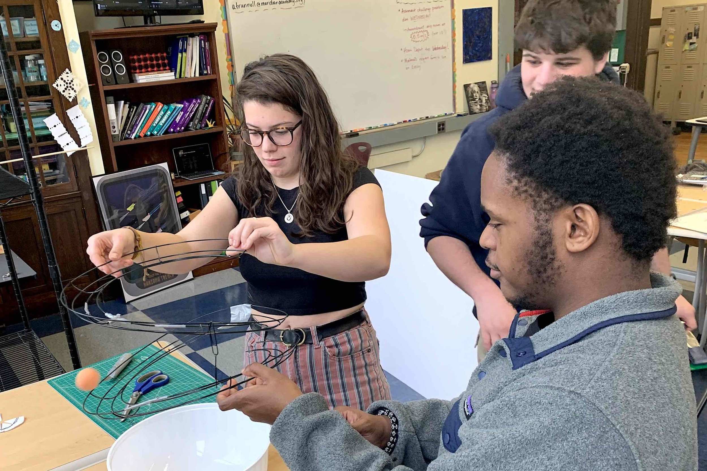
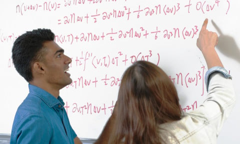

The Department of Mathematical Sciences is one of the four departments under the Faculty of Applied Sciences and Technology. The department has always maintained an old philosophy that “If you can’t count or measure it, you can’t manage it” therefore our activities affect all policies, and touch all aspects of people’s lives. The Department of Mathematical Sciences came into existence after a reorganization exercise in 2011. Currently plans are far advanced to split the Department into two namely; Department of Mathematical Sciences and Department of Statistical Sciences. The Department services all other Departments including parallel and evening programmes in the University. The department runs a three-year Higher National Diploma programme in Statistics which has been in Existence since 1993 when the polytechnics were directed to fully implement the tertiary education reform programme. Subsequent to the endorsement by the National Accreditation Board (NAB), the Department inaugurated its flagship top-up BTech Applied Statistics programmes with options in Health Statistics, Financial Statistics and Environmental Statistics in 2016/2017 academic year. The Department also runs Diploma programmes in Health Statistics.
The principal objective of the Department is to train high caliber practically oriented middle and high level manpower
for the food processing and Hospitality and Tourism industries in operational, management and decision making to:
The programmeme is tailored towards
To be a centre of excellence in producing high calibre graduates in Mathematics and Statistics suitable to support and sustain the needs of industrial and economic development of the country and beyond.
On 12th june 2024 Faculty of Applied Science and Tecnology proudly announces the launch of its cutting-edge robotics program, aimed at inspiring students to explore the fascinating world of automation and artificial intelligence. The initiative aligns with our commitment to providing hands-on learning experiences that prepare students for the future.
The program, set to commence on 20th june 2024, will offer students a unique opportunity to delve into robotics, coding, and problem-solving. Spearheaded by Dr Asare Yaw Obeng (Phd), the curriculum emphasizes practical application and creativity.
[Principal/Head of Faculty Name] expressed excitement, stating, "This program exemplifies our dedication to fostering innovation and preparing students for the evolving technological landscape.".Accompanying the news is a sneak peek into the robotics lab, showcasing students engaging in hands-on activities.
Kumasi-ashanti region, ghana, W/A
+233-591-826-475 / +233-345-654-121
Office Hours: Mondays and Wednesdays, 10:00 AM - 12:00 PM
Consultation: By appointment, please email to schedule.